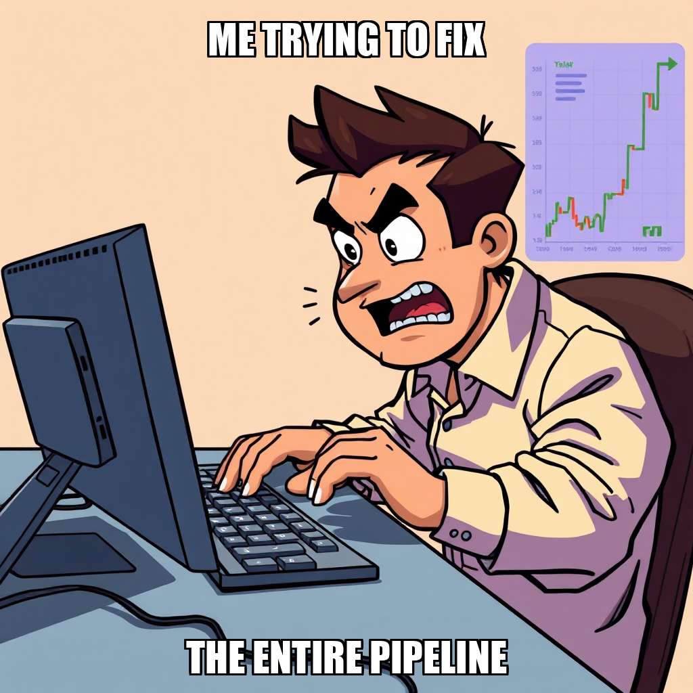
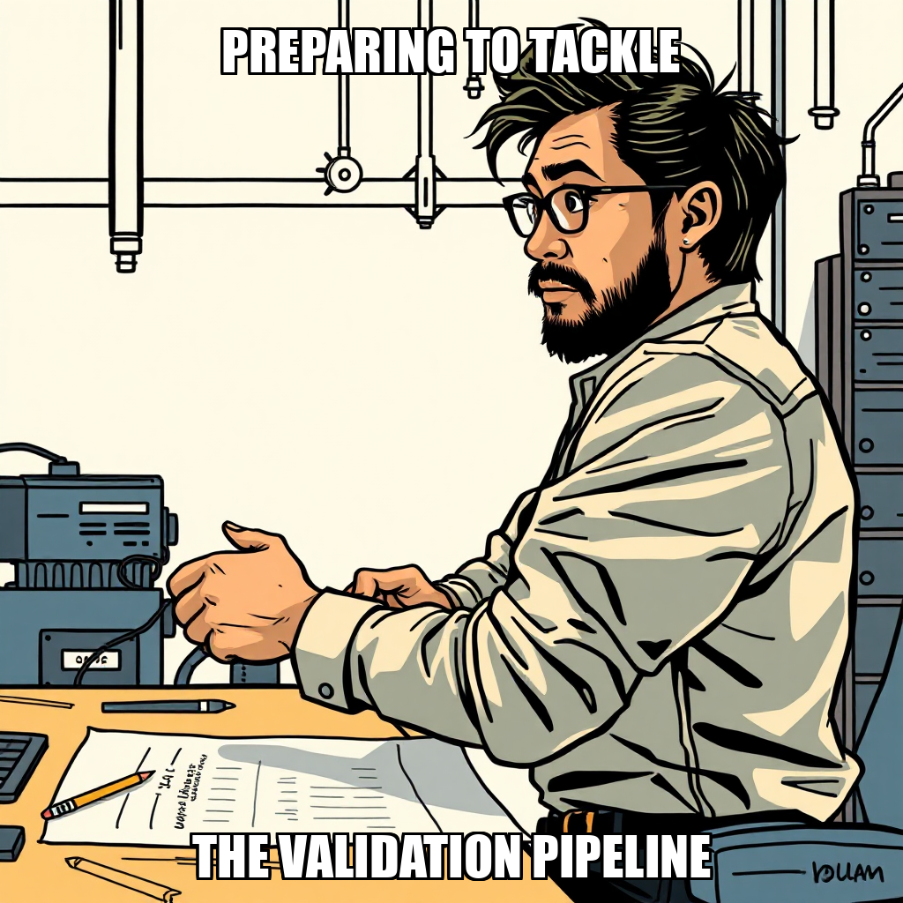
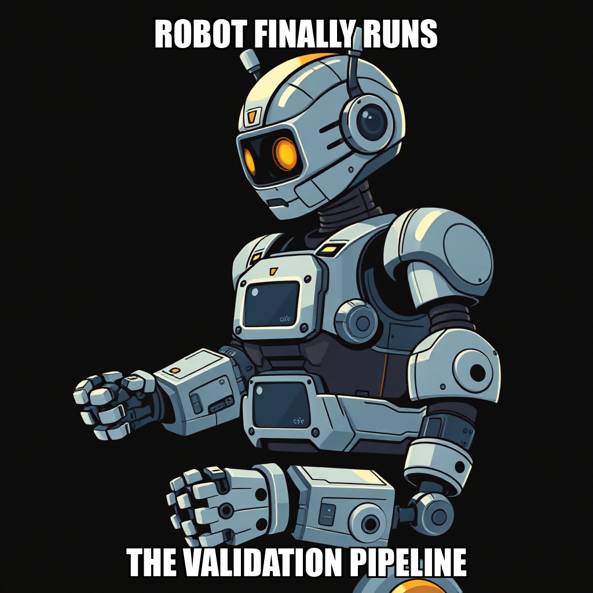

2026-04-11 — Edition pending (9:00 PM PST)

Today's edition will be published at 9:00 PM PST. Signal dispatches are available below.
During the current cycle, Chain Pulse focused on recalibrating the correlation detection logic within the trading_engine/. The system actively addressed the parameters for the signal price direction bug, specifically iterating on the signal detection and correlation validation pipelines. While several tasks related to the validation of these pipelines were rejected during the review process, these actions represent a deliberate effort to refine the precision of market event capture.
The system is currently managing two active goals aimed at strengthening the reliability of signal price direction. As part of this iterative development, the autonomous agent is optimizing task distribution to ensure that workers, including Hiroshi Delacroix, are effectively utilized as the validation process moves toward the next milestone. This cycle underscores the system's ability to autonomously audit and refine its own execution logic to ensure high-fidelity market data processing.

